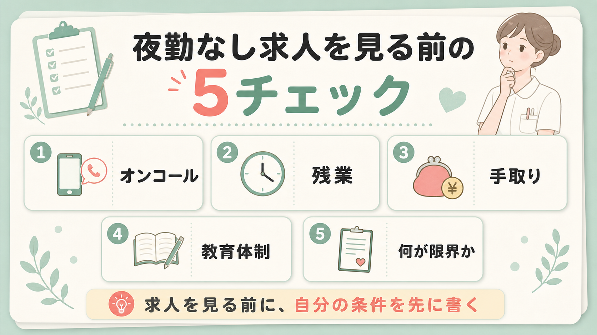
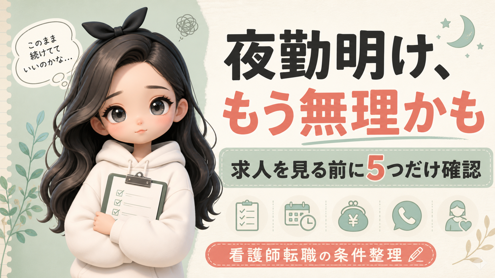

夜勤が終わったのに、次の勤務のことを考えてしまう。休みなのに休めていない感覚。

夜勤から逃げたいときほど、求人票のやさしい言葉だけを信じたくなる。
だから、応募より先に条件整理です。夜勤そのものが限界なのか、人間関係なのか、 休めないシフトなのか。ここを間違えると、転職しても同じ苦しさを持っていきます。
アイ 看護師キャリア整理室
夜勤明けに「もう無理かも」と思ったときほど、求人票の 夜勤なし が救いに見えます。けれど、見る順番を間違えると、 夜勤は消えても別のしんどさが残ります。

「転職したい」とはまだ言い切れない。でも、今の働き方を続ける想像をすると胸が重い。 その段階で見るべきなのは、求人の数より先に自分の限界です。
夜勤が終わったのに、次の勤務のことを考えてしまう。休みなのに休めていない感覚。
でも、オンコールや残業が多ければ、家に帰っても気が抜けないことがあります。
転職サイトは答えではなく道具。自分の条件がないと、紹介された求人に流されやすくなります。
転職サイトは答えをもらう場所ではなく、求人の有無と条件を確認する道具です。 先に自分の条件を書いておくと、紹介された求人に流されにくくなります。

夜勤から逃げたいときほど、求人票のやさしい言葉だけを信じたくなる。
だから、応募より先に条件整理です。夜勤そのものが限界なのか、人間関係なのか、 休めないシフトなのか。ここを間違えると、転職しても同じ苦しさを持っていきます。
しんどい時の求人探しは、条件の良い言葉に引っぱられます。 だから先に、選び方を固定しておきます。
まず「もう続けたくないこと」「下げてもいい条件」「下げたくない条件」を3つだけ書いてください。 そのあとで、ジョブメドレー看護師で今ある求人を確認すると、ただ眺めるより判断しやすくなります。
PR: リンク先で登録・申込が発生した場合、運営者に成果報酬が発生することがあります。 転職するかどうかは、求人条件を確認してから判断してください。